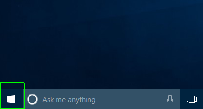
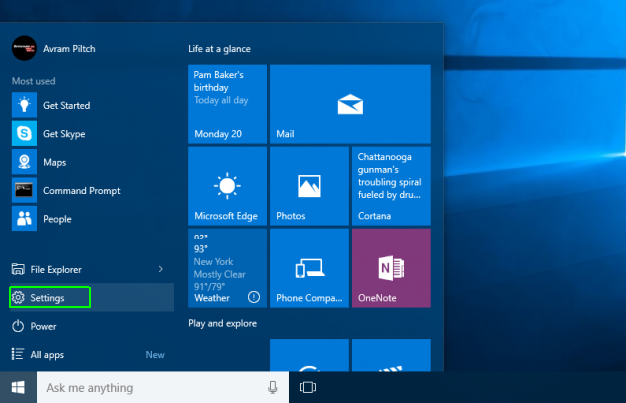
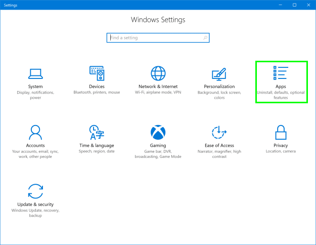
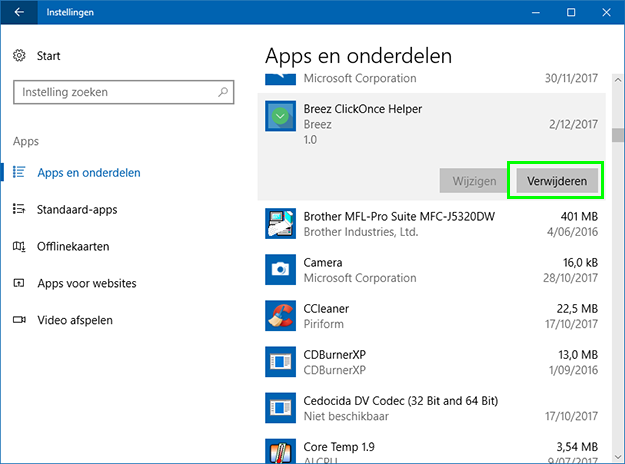

Breez ClickOnce Helper
To finish the uninstallation of Breez ClickOnce, please uninstall Breez ClickOnce Helper by following the steps below:
Step 1
Open the Start menu.

Step 2
Click Settings.

Step 3
Click Apps.

Step 4
Locate Breez ClickOnce Helper and click Uninstall.
